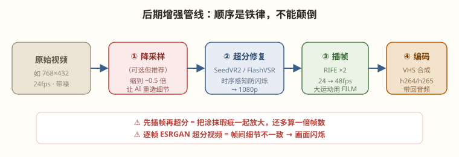

网上工作流里"二次采样"到底在干什么，以及让 24fps 丝滑到 48fps 的实操
"重采样/二次采样"在社区教程里被混用，实际是三种不同技术：
| 叫法 | 本质 | 干什么用 |
|---|---|---|
| 潜空间二次采样（img2img 式精修） | 把生成的视频解码→再加少量噪声→低 denoise 重跑一遍采样器 | 修复局部瑕疵、改变细节风格。耗时接近重新生成，属于"再创作"而非"增强" |
| 超分重采样 | 空间维度放大像素（SeedVR2 等） | 提清晰度——第 18 章专讲 |
| 时间重采样 = 插帧 | 时间维度补中间帧（RIFE 等） | 提流畅度——本章重点 |
它对图像很成熟（img2img），对视频性价比很低：重跑一遍的时间和重生成差不多，还破坏帧间一致性。视频镜头不满意，正确做法是改首帧/改提示词重新生成，而不是二次采样抢救。看到工作流里挂着它，先问"这一步真的必要吗"。
插帧模型（RIFE、FILM）输入相邻两帧，预测它们之间的光流（每个像素往哪动），再据此"弯折"合成中间帧。它不重画内容，只做运动内插——所以插帧不增加任何新细节，只增加运动平滑度。
Comfy-Org/frame_interpolation 下载 rife_v4.26.safetensors（22MB），放进 ComfyUI/models/frame_interpolation/，重启。FrameInterpolationModelLoader（选 rife）→ FrameInterpolate。图像序列进、倍增的图像序列出。VHS_VideoCombine（VideoHelperSuite 插件），帧率参数填源帧率×倍率（48），否则视频会以慢动作播放——这是新手最高频的坑。① 慢动作 bug：插帧 ×2 后编码帧率还写 24 → 视频变慢一倍。铁律：编码fps = 源fps × multiplier。
② 顺序颠倒：先插帧再超分 = 超分模型要多处理一倍帧数（时间翻倍），且插帧产生的轻微涂抹会被超分放大。永远先超分、后插帧（见下图）。

| 场景 | 建议 |
|---|---|
| 成片交付（游戏 PV、宣传片） | ✅ 24→48 或 24→60，丝滑感是"CG 品质"的重要组成 |
| 慢镜头镜头 | ✅ 生成正常速度 → 插帧 ×2~4 → 剪辑软件降速，获得高质量慢动作 |
| 草稿/内部评审 | ❌ 不必，省时间 |
| 运动极快的打斗镜头 | 🟡 RIFE 会涂抹，换 FILM 或保持 24fps |
流程：VHS_LoadVideo 读入 mp4 → FrameInterpolate（RIFE，×2）→ VHS_VideoCombine（fps=48，编码 h264，crf 18，把 LoadVideo 拆出的 audio 一并接回）。
结果：5 秒 124 帧 → 5 秒 248 帧 @48fps，星舰滑行如丝般顺滑。耗时约 2 分钟（对比：重新生成一条要 30 分钟）。
注意：音频必须从原视频拆出再接回——ComfyUI 核心 SaveVideo 以外的节点链路默认会丢音频（第 19 章详述）。
"运动大就换 FILM"过于笼统，可操作的判据是看帧间位移占比：主体在一帧内移动超过画面宽度约 15%（星舰快速掠镜、挥拳、爆炸碎片），RIFE 的光流估计开始失效，表现为运动边缘的"拉丝"涂抹。低于此阈值，RIFE 的结果更锐利。实操流程：默认 RIFE 跑一遍 → 逐镜抽查运动最激烈的 2~3 秒 → 发现涂抹的镜头单独换 FILM 重跑。
| 倍率 | 结果帧率 | 观感 | 建议 |
|---|---|---|---|
| ×2 | 48fps | 顺滑但保留"影像感" | ✅ 成片默认 |
| ×2.5（24→60） | 60fps | 平台适配（B站/YouTube 60fps 档） | ✅ 交付平台要求时用 |
| ×4 | 96fps | "肥皂剧效应"——过于滑腻，电影感流失 | 🟡 仅慢动作素材池 |
非整数倍率（如 ×2.5）通过"×2 插帧 + 编码时重采样到 60"实现，比直接 ×4 再降更稳。